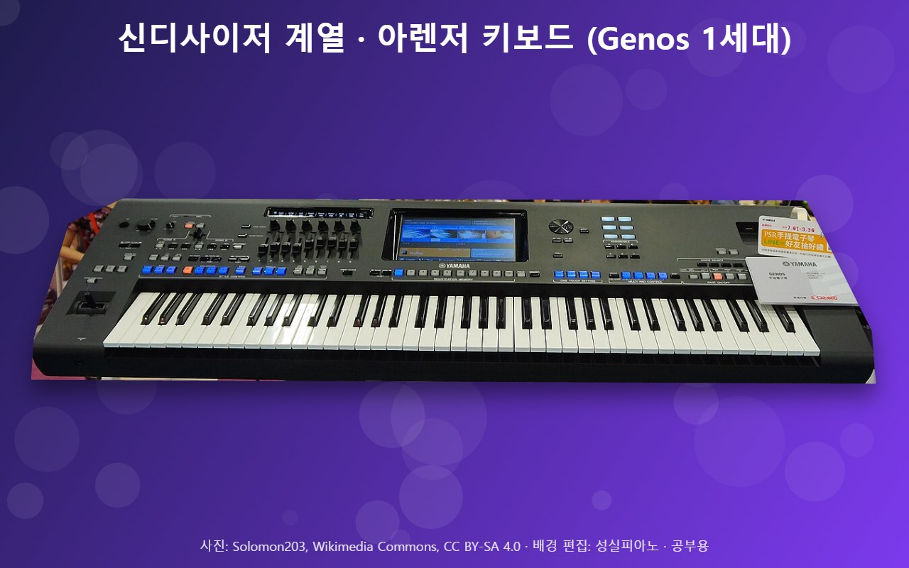
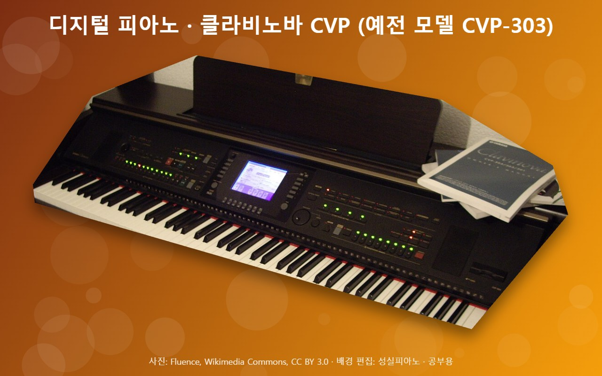

📚 판매용 아님 · 공부용
35년 조율사가 쉽게 풀어 본
신디사이저 vs 디지털 피아노
Genos2 · CVP-909 왕초보 레슨
1. 두 악기의 정체
🎛️ Genos2 = 아렌저 워크스테이션(신디 집안)
왼손 화음만 잡으면 드럼·베이스·기타가 따라오는 "반주 밴드" 키보드. 76건반, 가벼운 오르간식(FSX) 건반. 스피커가 몸에 없어요.
🎹 CVP-909 = 디지털 피아노(앙상블형 클라비노바)
88건반 나무 그랜드터치 건반, 페달 3개, 스피커 내장. 피아노 연습 + 반주 기능까지.

Genos 1세대(위). 사진: Solomon203, Wikimedia Commons, CC BY-SA 4.0 · 배경 편집

클라비노바 CVP-303(예전 모델). 사진: Fluence, Wikimedia Commons, CC BY 3.0 · 배경 편집
2. 숫자로 한눈에
| Genos2 | CVP-909 |
|---|
| 건반 | 76 (FSX, 터치·애프터터치) | 88 (나무 그랜드터치) |
| 음색 | 1,991 + 드럼 75 | 1,605 + 드럼 58 |
| 반주(스타일) | 800 | 675 |
| 동시 발음 | 384 | 256 |
| 스피커 | 없음(외부 연결) | 내장 |
| 페달 | 외부 연결 | 3개 |
| MIDI 단자 | A·B (IN/OUT) | IN·OUT·THRU |
야마하 공식 사양 기준. 미국 야마하 쇼핑몰 Genos2 6,799.99달러(2026년 11월 확인). 국내 가격은 판매처마다 달라 적지 않았어요.
3. 세 악기 차이
🎻 어쿠스틱 피아노
망치가 진짜 줄을 때림 → 조율 필요, 소리 1가지
🎹 디지털 피아노
녹음한 피아노 소리를 재생 → 조율 필요 없음, 헤드폰 연습
🎛️ 신디사이저·아렌저
소리를 만들고 바꿈 → 수천 가지 소리 + 반주
한 줄 정리: 디지털 피아노는 "피아노를 잘 치기 위한 악기", 신디사이저는 "음악을 만들고 무대에서 연주하기 위한 악기".
4. Genos2 왕초보 따라 하기
- 헤드폰·스피커를 먼저 꽂고 전원 켜기 (스피커가 몸에 없어요)
- Voice에서 Strings(현악기) 고르기 → 바이올린 소리
- Style에서 발라드 고르고 [ACMP] 켜기
- 왼손 도·미·솔 → 드럼·베이스가 "도 화음"으로 따라옴, 오른손 멜로디
- [REC]로 녹음하고 다시 듣기
5. CVP-909 왕초보 따라 하기
- 바르게 앉아 전원 켜기 → 그랜드 피아노 소리
- 헤드폰을 꽂으면 스피커가 꺼져요 → 밤 연습
- 메트로놈 60으로 한 손씩
- 오른쪽 페달 밟고 치면 소리가 길게
- 반주 켜고 왼손 화음 → 노래 반주, 마이크 단자로 노래까지
6. 두 악기 연결 (움직이는 그림)
방법 1 (MIDI): ① 두 악기 전원 끄기 ② MIDI 선으로 Genos2 MIDI OUT → CVP-909 MIDI IN ③ 전원 켜고 [Menu]→[MIDI]에서 채널 맞추기 ④ Genos2 건반을 누르면 CVP-909에서 소리!
방법 2 (오디오): Genos2 LINE OUT → CVP-909 AUX IN(작은 단자). 스피커 없는 Genos2 소리를 CVP 스피커로 들어요. 볼륨은 먼저 줄여 두기.
7. AI 기능이 있나요?
"말로 시키면 곡을 만드는 AI"는 두 악기 모두 없어요. 사양표의 AI Fingered / AI Full Keyboard는 내가 누른 건반을 보고 화음을 알아맞히는 기능이에요. 손가락이 조금 틀려도 반주가 맞는 화음으로 따라와요.
8. 누가·언제·어디에
| 누구 | 추천 |
|---|
| 피아노 처음 배우는 아이·어른 | 둘 다 꼭 필요하진 않음. 88건반 무게감 건반이면 충분. 둘 중이면 CVP-909 쪽 |
| 집에서 피아노+노래 반주 | CVP-909 같은 앙상블형 디지털 피아노 |
| 교회 반주·행사·밴드·작곡 | Genos2 같은 아렌저 |
| 전문 피아니스트 연습 | 건반 느낌 좋은 디지털 피아노나 어쿠스틱 피아노 |
9. 비슷하거나 더 유명한 악기 (3D 모형)
| 악기 | 종류 | 한 줄 소개 |
|---|
| 코르그 Pa5X | 아렌저 | Genos2의 맞수. 61·76·88건반. 독일 권장가 76건반 5,069유로 |
| 롤랜드 FANTOM | 신디 워크스테이션 | 소리 만들기·작곡에 강함 |
| 가와이 CA901 | 디지털 피아노 | 나무 건반 느낌으로 유명. 미국 5,599달러(2026년 11월 할인가) |
| 롤랜드 LX · 야마하 CLP | 디지털 피아노 | 반주 없이 피아노 연습에 집중 |
10. 맛보기: 처음 1분
🎹 디지털 피아노
전원 → 볼륨 반 → 가운데 "도" 엄지로 → 도레미파솔 천천히 → 오른쪽 페달 밟고 도미솔
🎛️ 신디사이저
헤드폰 → 소리 Strings → 도미솔 → Brass로 바꿔 다시 도미솔 → 같은 손가락, 다른 소리!
조율사의 한마디
악기가 아무리 많은 소리를 내도, 음악을 만드는 것은 손과 귀입니다. 화려한 기능보다 매일 열어 보고 싶은 악기가 최고의 악기입니다.